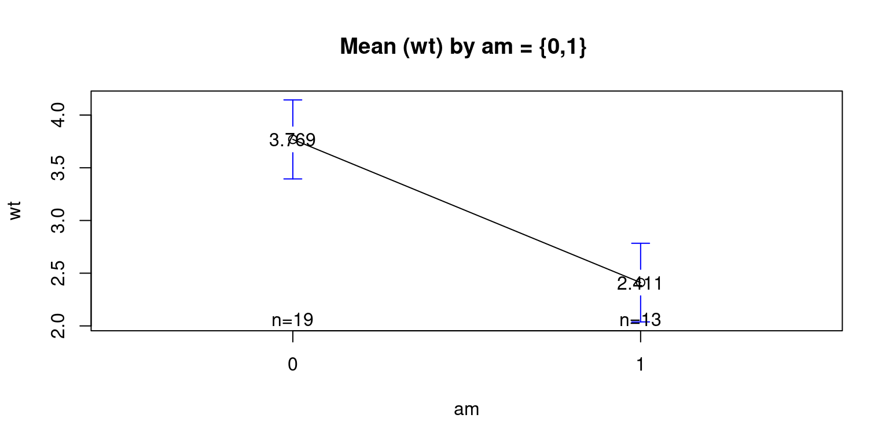
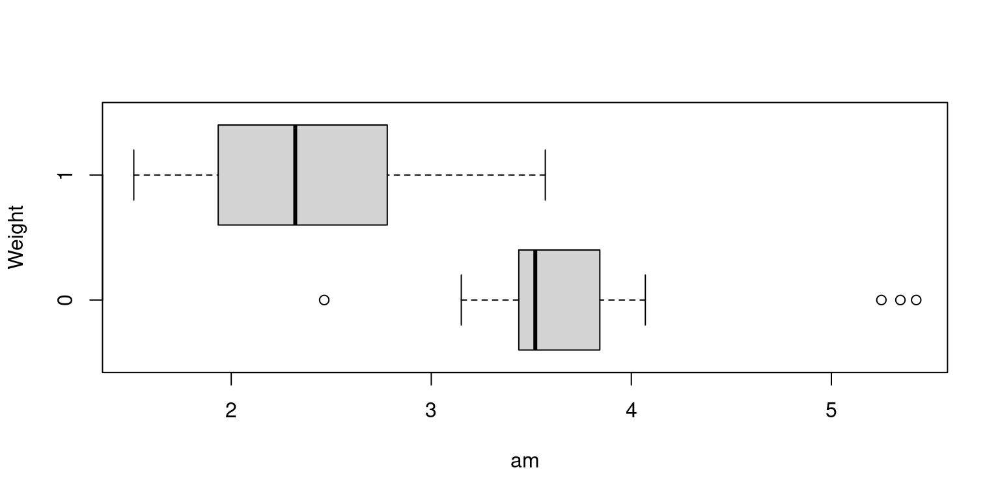
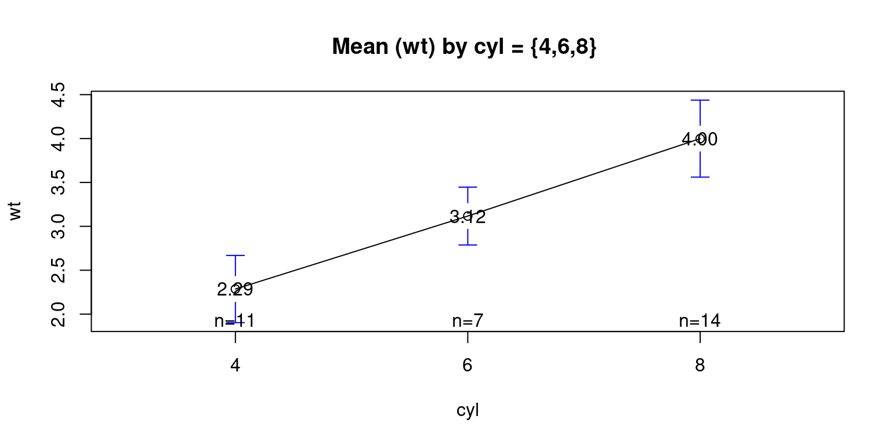
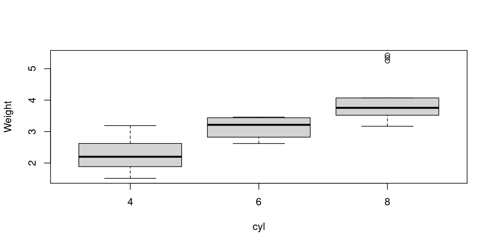
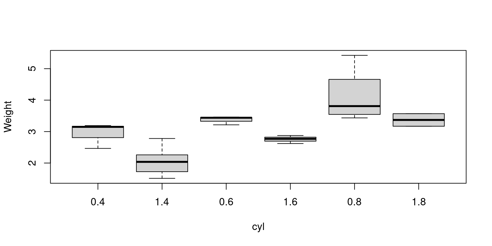
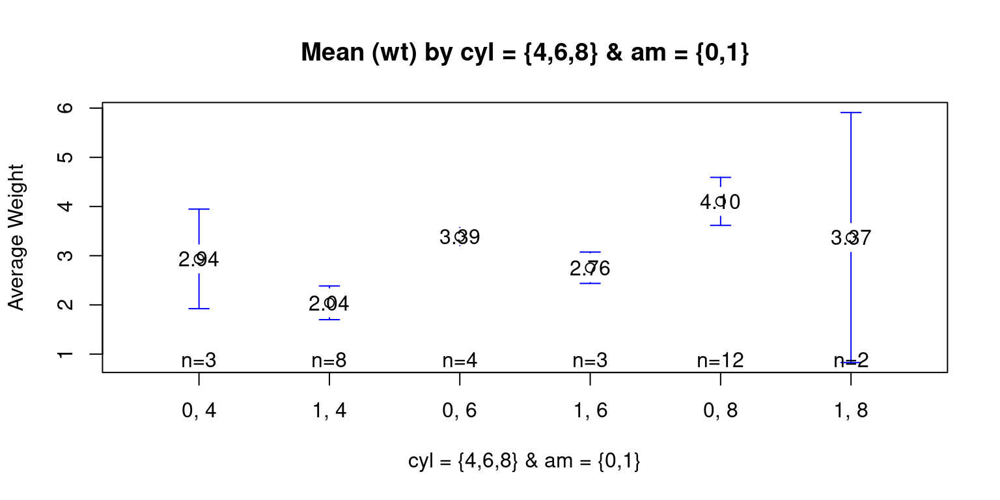

data(mtcars)
attach(mtcars)Continuous Data (2 of 3)
July 23, 2023
Overview of Bivariate Continuous Data
- Reading Data and Attaching Data to Memory
Bivariate Continuous and Categorical data
Bivariate Relationship between Weight (wt) and Transmission (am)
Display a summary table showing the descriptive statistics of weight of the cars broken down by transmission (am=1 or am=0)
aggregate()
aggregate(mtcars$wt,
by = list("am" = mtcars$am),
mean) am x
1 0 3.768895
2 1 2.411000aggregate(mtcars$wt,
by = list("am" = mtcars$am),
sd) am x
1 0 0.7774001
2 1 0.6169816tapply()
tapply(mtcars$wt, mtcars$am, mean) 0 1
3.768895 2.411000 tapply(mtcars$wt, mtcars$am, sd) 0 1
0.7774001 0.6169816 Visualizing Means – mean plot showing the average weight of the cars, broken down by transmission (am=1 & am=0)
library(gplots)
Attaching package: 'gplots'The following object is masked from 'package:stats':
lowessplotmeans(wt ~ am
,data = mtcars
,mean.labels = TRUE
,digits=3
,main = "Mean (wt) by am = {0,1} "
)
Visualizing Median using Box Plot – median weight of the cars broken down by transmission (am=1 & am=0)
boxplot(wt~am
, xlab = "am"
, ylab = "Weight"
, horizontal = TRUE
)
Bivariate Relationship between Weight (wt) and Cylinders (cyl)
Display a summary table showing the mean weight of the cars broken down by cylinders (cyl=4,6,8)
psych::describeBy(wt, cyl)
Descriptive statistics by group
group: 4
vars n mean sd median trimmed mad min max range skew kurtosis se
X1 1 11 2.29 0.57 2.2 2.27 0.54 1.51 3.19 1.68 0.3 -1.36 0.17
------------------------------------------------------------
group: 6
vars n mean sd median trimmed mad min max range skew kurtosis se
X1 1 7 3.12 0.36 3.21 3.12 0.36 2.62 3.46 0.84 -0.22 -1.98 0.13
------------------------------------------------------------
group: 8
vars n mean sd median trimmed mad min max range skew kurtosis se
X1 1 14 4 0.76 3.76 3.95 0.41 3.17 5.42 2.25 0.99 -0.71 0.2Show a mean plot showing the mean weight of the cars broken down by cylinders (cyl=4,6,8)
library(gplots)
plotmeans(wt ~ cyl,
data = mtcars
, mean.labels = TRUE
, digits=2
, main = "Mean (wt) by cyl = {4,6,8} ")
Show a box plot showing the median weight of the cars broken down by cylinders (cyl=4,6,8)
boxplot(wt ~ cyl,
xlab = "cyl", ylab = "Weight"
)
Distribution of Weight (wt) by Cylinders (cyl = {4,6,8}) and Transmisson Type (am = {0,1})
aggregate(wt,
by = list("am" =am, "cyl" = cyl),
mean) am cyl x
1 0 4 2.935000
2 1 4 2.042250
3 0 6 3.388750
4 1 6 2.755000
5 0 8 4.104083
6 1 8 3.370000Visualization - Show a box plot showing the mean weight of the cars broken down by Transmission Type (am=1 & am=0) & cylinders (cyl=4,6,8)
boxplot(wt ~ am:cyl
, xlab = "cyl"
, ylab = "Weight"
)
Visualization - Show a mean plot showing the mean weight of the cars broken down by Transmission Type (am=1 & am=0) & cylinders (cyl=4,6,8)
library(gplots)
plotmeans(wt ~ interaction(am, cyl, sep = ", ")
, data = mtcars
, mean.labels = TRUE
, digits=2
, connect = FALSE
, main = "Mean (wt) by cyl = {4,6,8} & am = {0,1}"
, xlab= "cyl = {4,6,8} & am = {0,1}"
, ylab="Average Weight"
)